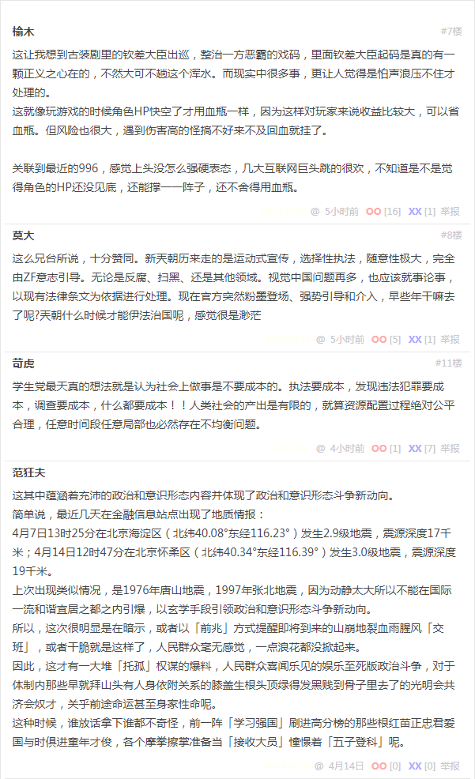

段子 4216933

其实最近的事情挺说不出滋味的
以视觉中国为例
出事儿的时候，和咪蒙一样，被约谈
马上关站了，注意，和法律没有关系，仅仅是约谈
现在央视站出来下了定义，是违法
可是视觉中国人家一年打赢那么多官司
他们的律师再牛，再巧舌如簧，咱们又不是陪审团制度
法院、法官也不懂法？
而且被告方的律师都不懂法？不觉得视觉中国是在违法主张权利？
现在官媒发声认定是违法，而不是违规了
看来上面有人终于找到了条文可以定性了
那么之前所有的判决是不是要全部改判？
如何改判？如何赔偿？方丈的钱回得来不？
即便钱回来了？什么名义？补偿？退款？
那之前下判决的法官属不属于工作失误？业务不精？甚至渎职？
高院再新出具司法解释？等开大会通过新的版权法律？
我从心底里觉得可怕的是
这一切的过程
没有丝毫依据现有法律进行的部分
全是
人
治
有人说要办他
那就办他
怎么办？总能找到条文的
那之前的那些又怎么算？
这让我想到古装剧里的钦差大臣出巡，整治一方恶霸的戏码，里面钦差大臣起码是真的有一颗正义之心在的，不然大可不趟这个浑水。而现实中很多事，更让人觉得是怕声浪压不住才处理的。
这就像玩游戏的时候角色HP快空了才用血瓶一样，因为这样对玩家来说收益比较大，可以省血瓶。但风险也很大，遇到伤害高的怪搞不好来不及回血就挂了。
关联到最近的996，感觉上头没怎么强硬表态，几大互联网巨头跳的很欢，不知道是不是觉得角色的HP还没见底，还能撑一一阵子，还不舍得用血瓶。
这么兄台所说，十分赞同。新兲朝历来走的是运动式宣传，选择性执法，随意性极大，完全由ZF意志引导。无论是反腐、扫黑、还是其他领域。视觉中国问题再多，也应该就事论事，以现有法律条文为依据进行处理。现在官方突然粉墨登场、强势引导和介入，早些年干嘛去了呢?兲朝什么时候才能伊法治国呢，感觉很是渺茫
学生党最天真的想法就是认为社会上做事是不要成本的。执法要成本，发现违法犯罪要成本，调查要成本，什么都要成本！！人类社会的产出是有限的，就算资源配置过程绝对公平合理，任意时间段任意局部也必然存在不均衡问题。
这其中蕴涵着充沛的政治和意识形态内容并体现了政治和意识形态斗争新动向。
简单说，最近几天在金融信息站点出现了地质情报：
4月7日13时25分在北京海淀区（北纬40.08°东经116.23°）发生2.9级地震，震源深度17千米；
4月14日12时47分在北京怀柔区（北纬40.34°东经116.39°）发生3.0级地震，震源深度19千米。
上次出现类似情况，是1976年唐山地震，以及1997年张北地震，因为动静太大所以不能在国际一流和谐宜居之都境内引爆，都是在以「玄学」手段引领政治和意识形态斗争新动向。
所以，这次很明显是在暗示，或者以「前兆」方式提醒即将到来的山崩地裂血雨腥风「交班」，或者干脆就是这样了，人民群众毫无感觉，一点浪花都没掀起来。
因此，这才有一大堆「托孤」权谋的爆料，人民群众喜闻乐见的娱乐至死版政治斗争，对于体制内那些早就拜山头有人身依附关系的膝盖生根头顶绿得发黑贱到骨子里去了的光明会共济会奴才，关乎前途命运甚至身家性命呢。
这种时候，谁放话拿下谁都不奇怪，前一阵「学习强国」刷进高分榜的那些根红苗正忠君爱国与时俱进童年才俊，各个摩拳擦掌准备当「接收大员」憧憬着「五子登科」呢。
补充
结合最近英吉利脱欧延期新闻，这是仍在「续命」的表现，「一朝天子一朝臣」大戏没那么容易落幕，最起码「和珅」肯定不愿意跌倒。
类比脱欧，台湾若是独立了会咋样都知道，或者境内普遍「一国两制」。比方说山东真的「把省界一封就是一个国家」然后设立海关收税，再比方说广东又把三十年前设计的省旗省徽拿出来叫嚣「粤军不需要中央一分钱军费，粤港澳大湾区足以养兵」……然后「齐人治齐」「粤人治粤」？
那么，已经混进中央以及在其它省份把持位置的「齐人」「粤人」都会咋样？肯定清洗干净撵回姥姥家去嘛，不撵走留着当间谍特务卧底抽冷子「小人物改变历史走向」么？
所以，无论市面上充沛的色目逗哔怎么「自作多情」的叫嚣抓到了壮丁，咱都不上当，直说作为北京土生土长的的土著就宅在「老房子」里面哪儿也不去等着看热闹。至于追着我喷「头顶绿得发黑」造谣污蔑栽赃陷害硬说还有个啥「老婆/未婚妻」，更是要坚决否认迎头痛击，就是要甩掉莫名其妙被扣上「人身依附关系」的可能性。
数学渣职业习惯内化于心外化于行，「预则立不预则废」「谋定而后动」，早说过了。